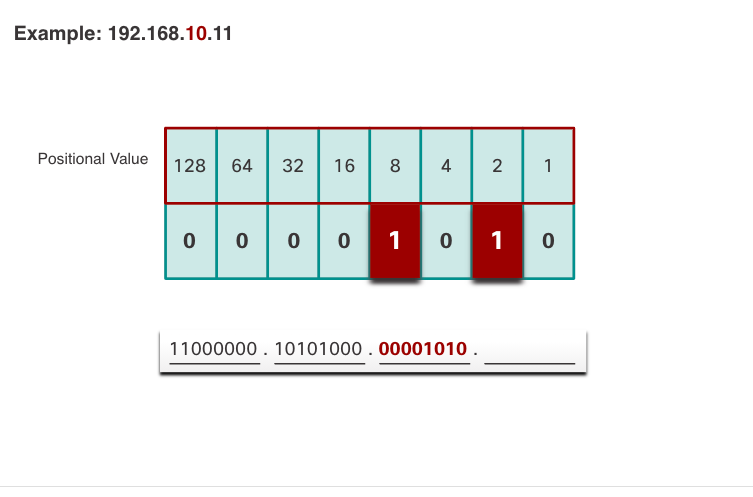
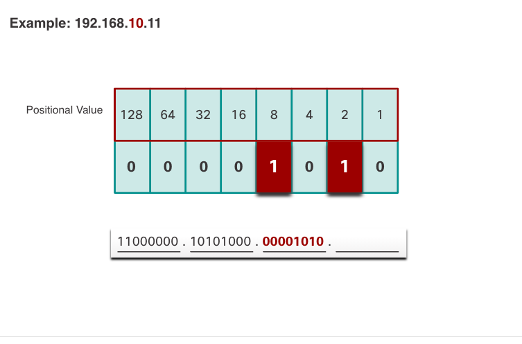

IPv4 / IPv6
IP mẫu: 203.162.4.0
Netmask: 255.255.255.0 = /24
Chia thành 5 Subnet
Ta có dãy số 128 64 32 16 8 4 2 1
Đầu tiên cần chuyển ip về dạng nhị phần bằng cách lấy octet đầu tiên trừ 128
Nếu không trừ được thì ta điền số 0 đầu tiên, ở đây trừ được còn 75 và t điền 1.
Tiếp tục lấy 75 trừ tiếp 64 được còn 11 và ta điền 1.
Thấy rằng 11 không trừ được từ 32 đến 16 nên ta điền 2 số 0.
Tiếp tục lấy 11 trừ tiếp 8 được còn 3 và ta điền 1.
Thấy rằng 3 không trừ được từ 4 nên ta điền số 0.
Tiếp tục lấy 3 trừ tiếp 2 được còn 1 và ta điền 1.
Tiếp tục lấy 1 trừ tiếp 1 được còn 0 và ta điền 1.
Ta được dẫy số nhị phân của octet đầu sau khi tính là 11001011
làm tương tự vs các octet và subnet mask còn lại.
Ta có dãy số nhị phân của địa chỉ ip : 11001011.10100010.00000100.00000000
Ta có dãy số nhị phân của subnetmask /24 : 11111111.11111111.11111111.00000000
Ở đây ta cần 5 subnet nên ta dùng phép tính 2^n > số subnet
nên 2^3 = 8 > 5 còn subnet vậy ta sẽ lấy 3 bit làm network
địa chỉ network khi lấy 3 bit làm network ta dc các lớp network sau
11001011.10100010.00000100.000|00000 203.162.4.0 /27
11001011.10100010.00000100.001|00000 203.162.4.32 /27
11001011.10100010.00000100.010|00000 203.162.4.64 /27
11001011.10100010.00000100.100|00000 203.162.4.128 /27
11001011.10100010.00000100.101|00000 203.162.4.160 /27
11001011.10100010.00000100.011|00000 203.162.4.96 /27
11001011.10100010.00000100.110|00000 203.162.4.192 /27
11001011.10100010.00000100.111|00000 203.162.4.224 /27
Vậy là có thể lấy ra 5 subnet và số subnet dư thừa ít nhất có thể.
Chia mỗi Subnet cần 60 host
Các bước chia ip thành nhĩ phân tương tự như trên
Vì cần host cho mỗi subnet nên ta dùng phép tính 2^n >= số host
nên 2^6 = 64 > 60 vậy ta sẽ lấy 6 bit làm host
địa chỉ network khi lấy 3 bit làm network ta dc các lớp network sau
11001011.10100010.00000100.00|000000 203.162.4.0 /26
11001011.10100010.00000100.01|000000 203.162.4.32 /26
11001011.10100010.00000100.11|000000 203.162.4.192 /26
11001011.10100010.00000100.10|000000 203.162.4.128 /26
Vậy là ta có 4 network mỗi network chứa 160 -2 địa chỉ là broadcast và địa chỉ đầu tiên còn 158 host mỗi subnet.
 
